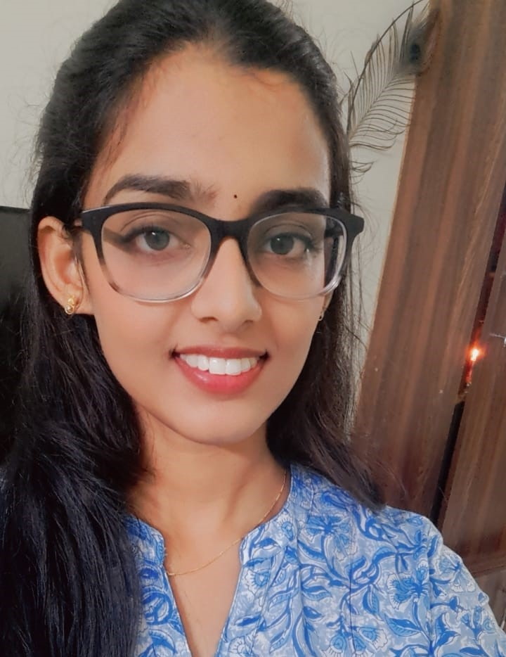

I'm Akepati Thrisaileswari, an aspiring software developer driven by a profound passion for crafting exceptional websites and apps. With a solid foundation in Computer Science and Engineering, my goal is to excel in the field of software development. This portfolio serves as a platform to exhibit my skills, creativity, and unwavering dedication to this craft. Delve into my projects, educational endeavors, and professional ventures to gain insight into my journey as a software developer.
Education stands as the bedrock of both personal and professional advancement, offering the essential know-how and abilities required to navigate today's intricate landscapes. It acts as a springboard for continual learning, enabling individuals to chase their interests, unearth fresh prospects, and leave lasting imprints on society. My educational voyage has armed me with the necessary instruments to confront obstacles, welcome innovation, and strive for distinction in every pursuit.